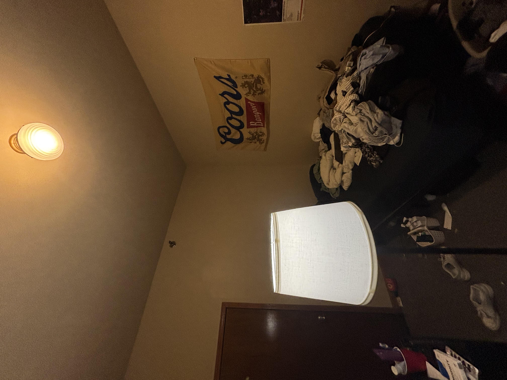
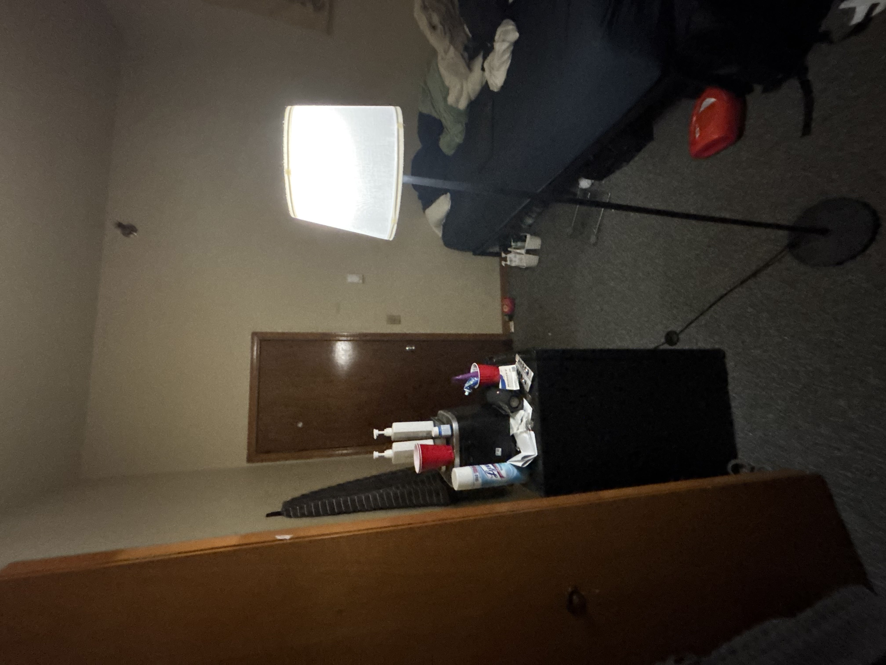
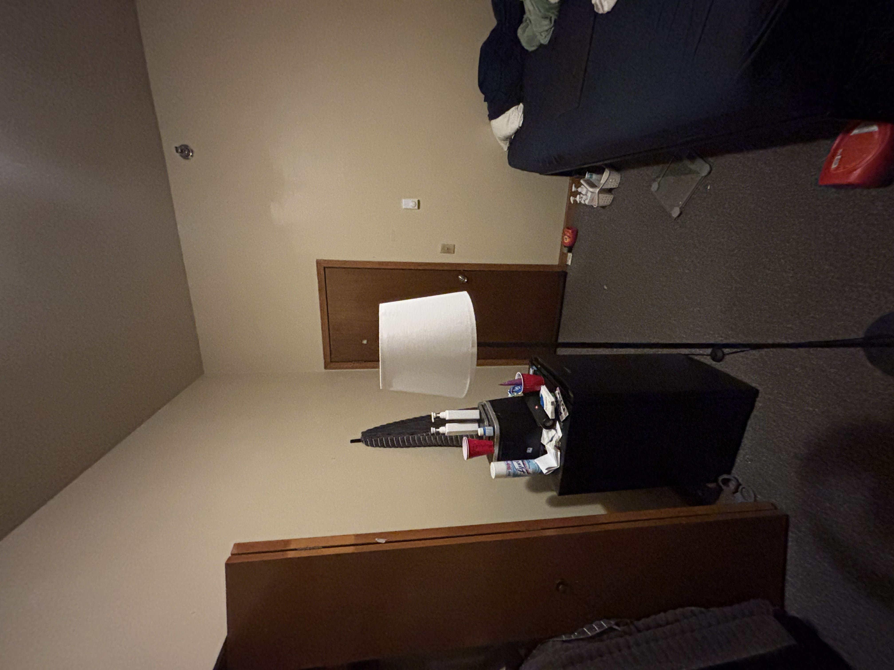

Teachable Machines — Lighting Condition Classifier
A machine learning experiment classifying indoor lighting conditions — built with Google's Teachable Machine, TensorFlow.js, and 300 original images contributed by our group.
This model was trained to recognize three distinct indoor lighting conditions using a live webcam feed. Point your camera at a room and it will predict which lighting scenario is present in real time. The model was trained exclusively on original photos taken by our group — no internet images or AI-generated data.
Brightest condition. Overhead ceiling light and desk lamp running simultaneously. Warm, even illumination throughout.
Example photos from our dataset:

Warm, directional glow from a desk lamp. Overhead light is off. Darker corners, concentrated light source.
Example photos from our dataset:

Cool, flat light from the ceiling fixture. Lamp is off. Even but cooler tone than the combined condition.
Example photos from our dataset:

Try the model yourself — point your camera at a lit room and see how it classifies the lighting condition.
Click Start Classifier and allow camera access when prompted.
Turn on both your overhead light and a lamp and point the camera at the room.
Switch to lamp only (overhead off) and watch the confidence bars shift.
Try overhead only (lamp off) — note the difference from the combined class.
Each group member contributed 100 original photographs taken in their own space, for a total corpus of 300 images across three lighting condition classes. No images were downloaded from the web or AI-generated.
Brightest condition. Both overhead light and lamp running simultaneously.
Warm, directional light. Overhead off, lamp on. Most visually distinct class.
Cool, flat light. Overhead on, lamp off. Subtler difference from Class 1.
Watch the classifier running live across all three lighting conditions.
What lessons from Unmasking AI are resonant for you as you complete this assignment?
When we set out to build a lighting condition classifier using Google's Teachable Machine, we expected a technical exercise. We did not expect to spend as much time thinking about what the project exposed about ourselves — our assumptions, our habits, our blind spots — as we did actually building it. Reading Joy Buolamwini's Unmasking AI alongside this process collapsed the distance between her research and our work in ways we did not anticipate. The book is not abstract theory. It is a forensic account of how bias gets baked into machine learning systems step by step, decision by decision, and our project replicated many of those same steps in miniature.
The most foundational lesson from Unmasking AI is that machine learning systems learn entirely from their training data, and that data is never neutral. As Buolamwini describes in Chapter 5, "Defaults Are Not Neutral," even the cameras used to capture training images inherit historical biases: the Shirley card, used to calibrate analog film cameras, was an image of a white woman, meaning that exposure settings were optimized for light skin and carried those defaults into subsequent digital technologies. She writes that default settings "often reflect the coded gaze — the preferences of those who have the power to choose what subjects to focus on." This history hit close to home for our project. Our classifier depends entirely on the way a camera interprets light. We were, without initially realizing it, building a system layered on top of imaging technology that has its own historical skews toward certain environments and lighting conditions.
That connection became concrete when we examined our own dataset. All 300 images in our training corpus were taken at night, indoors, under artificial light. This was not a deliberate methodological choice — it was a circumstantial one. The project was done late, and natural daylight was not available. But the result is a model with a significant blind spot: it has never encountered a window, sunlight, or the mixed natural-artificial lighting conditions that characterize most real rooms during the day. When we ran the trained classifier in daylight environments, confidence scores scattered unpredictably across all three classes. The model was not malfunctioning — it was doing exactly what it was trained to do, which was precisely the problem. This is what Buolamwini means in the Introduction when she argues that "AI reflects both the aspirations and the limitations of its makers." Our nighttime assumptions became the model's nighttime assumptions.
Buolamwini's own pivotal moment came when she was building the Aspire Mirror at MIT and discovered that an open-source face-tracking library could not detect her dark-skinned face at all. Only when she held a white Halloween mask over her face did a detection box appear on screen. She describes the experience as "coding in whiteface," and introduces the term "coded gaze" to describe how the priorities and prejudices of those who build technology propagate harm through the systems they create — not necessarily intentionally, but systematically. Our project does not involve faces, but the structural parallel is direct. Our classifier works well under the specific nighttime conditions it was trained on. Point it at a different environment — a room with natural light, a different lamp type, a different wall color — and confidence collapses. Like Buolamwini's face-tracking library, our model sees only the world it was shown.
This limitation also has an important practical dimension. The classifier functions reliably in specific situations: when the desk lamp is close to the camera and clearly visible, and when the overhead light is the dominant illumination source. At greater distances, or in rooms that differ from our training environments, the model struggles. "Class 1 — Both Lights On" and "Class 3 — Overhead Only" are frequently confused because both conditions share an overhead lighting component. Only the presence or absence of the lamp's warm, directional glow distinguishes them, and that distinction becomes subtle at camera distances of more than a few feet. This ambiguity is not a technical malfunction — it is a data failure. We did not capture enough variation in how "both lights on" looks distinct from "overhead only" across different distances, angles, and rooms. We built a model that learned our rooms, not the world.
Buolamwini's Gender Shades research, detailed in Chapter 11, is directly instructive here. When she tested IBM's, Microsoft's, and Face++'s gender classification systems using her Pilot Parliaments Benchmark — a dataset constructed to include darker-skinned parliamentarians from African countries alongside lighter-skinned parliamentarians from Nordic countries — she found accuracy gaps that aggregate performance metrics had entirely concealed. Microsoft achieved 100 percent accuracy on lighter-skinned males while performing at only 79.2 percent on darker-skinned females. IBM's gap between those same groups reached 34.4 percent, a disparity invisible in the headline figure of 87.9 percent overall accuracy. The systems were not broken; they had been evaluated on datasets that skewed toward the populations they performed best on. Our dataset has the same structural problem in a different domain. We evaluated our model under conditions similar to those in which it was trained, which made it appear more reliable than it is in practice.
Chapter 9, "Crawling Through Data," provided another uncomfortable mirror. Buolamwini describes the painstaking labor of constructing the Pilot Parliaments Benchmark — visiting government websites, hand-labeling 1,270 faces herself, wrestling with the ethics of using images without explicit consent. She references Mary Gray and Siddharth Suri's concept of "ghost work" to name the often invisible human labor that machine learning systems depend on. Our 300 images required real hours: planning shots, photographing, organizing, and uploading to Teachable Machine. That labor is what the model is. Strip away the TensorFlow.js interface and the animated confidence bars, and what remains is 300 photographs taken in dorm rooms and apartments late at night. Buolamwini's observation that "behind the headlines and slick marketing pages, so many of the advances in machine learning are dependent on labeled datasets" landed differently once we had done even this small amount of that work ourselves. The glamour of the demo is entirely built on the unglamorous effort of data collection.
Perhaps the sharpest lesson from Unmasking AI for our purposes comes from Buolamwini's framing of intersectionality as a methodological tool. Drawing on Kimberlé Crenshaw's framework, she argues that examining a single axis — gender alone, or skin type alone — will consistently produce a false sense of the progress an AI system has made. Single-axis analysis in Gender Shades hid the worst disparities, which only emerged when gender and skin tone were examined at their intersection simultaneously. Our project is simpler, but the same logic applies: analyzing whether our model works overall obscures the fact that it works well for one class (lamp only, which has the most visually distinct signature) and poorly for another (both lights on versus overhead only, which are frequently confused). Failure is not evenly distributed across the three classes, and reporting average performance would make the model appear more capable than it is for users in the conditions it handles worst.
There is a line in the Introduction that has stayed with us throughout this project. Buolamwini asks: "Do we need this AI system or this data in the first place, or does it allow us to direct money at inadequate technical Band-Aids without addressing much larger systemic societal issues?" Our classifier does not carry high stakes — it identifies desk lamps, not criminal suspects or mortgage applicants. But the question behind the question is what we carry away from building it. The value of this assignment is not the model itself. The value is what we learned about how models fail, whose assumptions get embedded in training data, and how easily a well-intentioned system becomes an unreliable one when the builders' circumstances — a late-night dorm room with one lamp and one overhead light — become the only world the model knows.
Reading Unmasking AI changed how we saw this project while we were building it. When we noticed the model confusing Classes 1 and 3, we thought about Buolamwini's observation that aggregate accuracy "can mask important performance differences between groups." When we added the privacy notice to the classifier page — assuring users their webcam feed never leaves their device — we were acting on her arguments in Chapter 9 about the ethics of data collection and the inadequacy of "lawful but awful" data practices. When we acknowledged in our limitations section that we have no external validation set, we were applying the lesson of Gender Shades: that testing only on familiar data creates a false sense of reliability. These are not grand gestures. But they are conscious ones, and that consciousness is what Buolamwini's book ultimately asks of its readers — not perfection, but a commitment to asking, before building anything, whose gaze is being coded in.